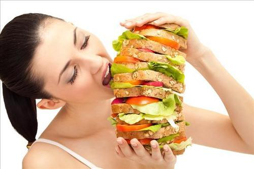

Các thực phẩm tưởng lợi hóa hại
1. Thức ăn đóng gói với mác "ít béo"
- Nhiều người tiêu dùng nghĩ rằng họ sẽ được khỏe mạnh, giảm cân nếu dùng những loại thực phẩm với nhãn mác “ít béo”. Tuy nhiên theo các chuyên
gia dinh dưỡng, hầu hết thực phẩm đóng gói với ít chất béo thường được cho thêm vào một số loại hóa chất khác để bù đắp. Thông thường những hóa
chất này rất có hại cho cơ thể, thậm chí gây ra những vấn đề sức khỏe nghiệm trọng nếu dùng trong thời gian dài.

2. Bơ thực vật
- Thông thường người tiêu dùng thích chọn bơ thực vật hơn bơ sữa bởi không có cholesterol. Tuy nhiên theo các chuyên gia dinh dưỡng, trong thành phần bơ
thực vật thường có lượng chất béo chuyển hóa rất cao. Loại chất béo này có hại cho cơ thể, gây tổn thương mạch máu, thậm chí còn làm tăng lượng cholesterol trong máu.
3. Nước ép đóng hộp
- Nhiều người nghĩ rằng nước ép trái cây đóng hộp cũng có lợi như nước ép tự nhiên. Tuy nhiên thực tế hoàn toàn ngược lại. Nước ép đóng hộp gồm tất cả các
sản phẩm được làm từ hương liệu tổng hợp và hương liệu tự nhiên, đều được đóng gói với hàm lượng đường cao và cho thêm vào các chất hóa học, chất bảo quản.
Chính các chất phụ gia ấy có thể là nguyên nhân gây ra béo phì và các vấn đề sức khỏe nghiêm trọng khác. Vì thế cách tốt nhất để cơ thể có đủ vitamin, bạn
nên ăn trái cây tươi hoặc tự làm nước ép tại nhà thay vì uống nước ép đóng gói.
4. Các loại thịt chế biến sẵn
Trong thành phần của các loại thịt chế biến sẵn thường được thêm vào các chất hóa học, chất bảo bảo quản. Những hóa chất này được chứng minh có thể gây ung
thư ruột kết và nhiều vấn đề sức khỏe khác.
Ngoài ra các loại thịt này thường được đóng gói với nhiều đường, muối và chất béo là những chất có thể gây béo phì và bệnh đái tháo đường. Vì thế lời khuyên
cho bạn, nên tự nấu nướng ở nhà, tránh dùng các loại thịt chế biến sẵn.
5. Các món ăn nhanh
- Các món ăn nhanh dù được quảng cáo là đầy đủ dinh dưỡng, giúp bạn có thân hình cân đối, có lợi cho người muốn giảm cân, đều được chế biến với rất nhiều đường
và chất béo. Những chất phụ gia này không có lợi cho cơ thể.
6. Thức ăn đông lạnh
- Khi bạn không có thời gian đi lại thì việc dùng thức ăn đông lạnh sẽ rất thuận tiện. Tuy nhiên những loại đồ ăn đông lạnh này thường có hàm lượng calo thấp và
nhiều natri. Thức ăn dạng này được chế biến rất kỹ nên rất khó tiêu hóa đòi hỏi cơ thể bạn phải tốn rất nhiều năng lượng để tiêu thụ hết.
7. Ăn sáng với ngũ cốc chế biến sẵn
- Ngũ cốc có thể là loại thực phẩm tốt cho bữa sáng. Ngũ cốc chế biến sẵn thì chưa hẳn là vậy. Ngay cả các loại ngũ cốc được gắn mác “tốt cho sức khỏe” cũng được
đóng gói với lượng đường và chất béo cao, cùng với một số chất hóa học, chất bảo quản có hại cho cơ thể.
8. Các loại bánh chiên
- Nhiều người có thói quen ăn sáng bằng một chiếc bánh ngọt chiên. Các loại bánh này có mùi vị ngon, nhưng chứa một lượng lớn đường, chất béo, chất chuyển hóa có
hại. Trung bình một chiếc bánh rán có thể chứa trên 300 calo. Đây là nguyên nhân hàng đầu dẫn đến tăng cân nhưng ít ai nhận ra.
9. Nước ngọt, soda
- Nước ngọt thường có lượng đường cao và nhiều loại hóa chất, chất bảo quản được chứng minh liên quan đến một số loại bệnh ung thư. Nước ngọt đóng chai không những
không có giá trị dinh dưỡng mà còn có thể gây ra bệnh tiểu đường. Bên cạnh đó, ngay cả với những loại đồ uống giảm béo cũng mang lại nhiều rủi ro, vì nó được chế
biến từ nhiều hóa chất có thể gây bệnh và ung thư
10. Khoai tây chiên
- Khoai tây chứa nhiều chất béo và calo. Trong thành phần khoai tây chiên chứa nhiều acrylamide, một hóa chất được sinh ra trong quá trình chiên thực phẩm ở nhiệt
độ cao. Hóa chất này được chứng minh có thể gây ung thư, thậm chí dẫn đến tử vong nếu tiêu thụ nhiều.